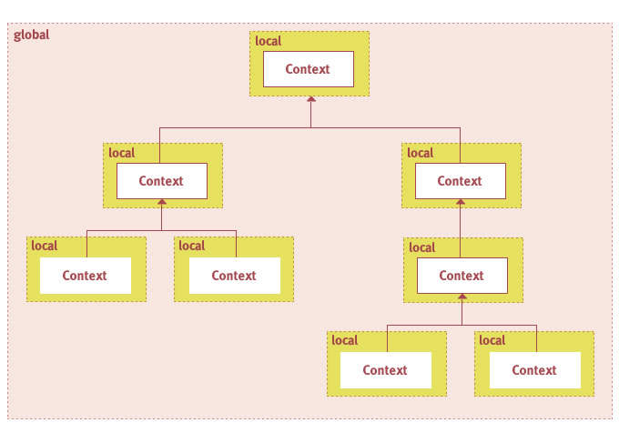
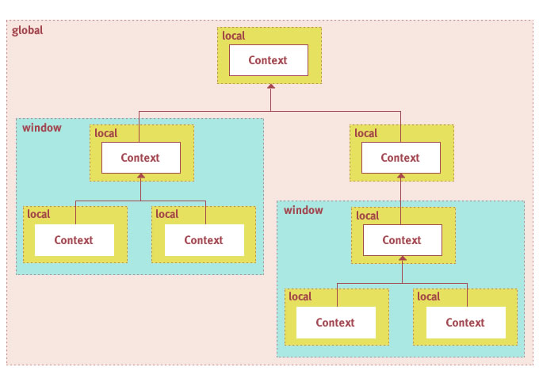

Parsley comes with a generic Messaging Framework that allows you to exchange messages between objects in a fully decoupled manner. Decoupled not only means that the sender and the receiver do not have to know each other. It is equally important that the sending and receiving objects are also fully decoupled from the framework itself. This is an advantage ignored by most other Flex Frameworks (including version 1 of Parsley) where you have to use objects or static methods from the Framework API for dispatching application events or messages. Why is that important? If your objects are decoupled from the framework you can reuse them in a different context where you might want to use a different framework or no framework at all. For example you might want to wire dispatching and receiving instances programmatically for Unit Tests without the extra burden to initialize an application framework.
The Parsley Messaging Framework is generic in a sense that it does not impose a particular usage style. This is also a difference to some of the existing Flex MVC Frameworks which often advocate a certain structure and usage pattern or even offer concrete base classes for the controller, model and view parts. With Parsley you are completely free to design your application architecture. In case you do use the Messaging Framework to build a classic MVC architecture you may want to read 11 Building MVC Architectures in addition to this chapter.
This chapter describes how you can configure objects for sending and receiving messages. For every configuration option examples for AS3 Metadata, MXML and XML configuration are included.
For an object that wants to dispatch messages managed by Parsley you have the following setup options:
EventDispatcher. Event. For an object that wants to receive and process messages managed by Parsley you have the following setup options:
If the class that you want to dispatch messages managed by Parsley is a regular EventDispatcher this
is the most convenient option. It would work for any existing EventDispatcher implementation even if it wasn't
designed with Parsley in mind. It requires two steps:
Metadata Example
[Event(name="loginSuccess",type="com.bookstore.events.LoginEvent")]
[Event(name="loginFailed",type="com.bookstore.events.LoginEvent")]
[Event(name="stateChange",type="flash.events.Event")]
[ManagedEvents("loginSuccess,loginFailure")]
public class LoginServiceImpl extends EventDispatcher implements LoginService {
[...]
private function handleLoginResult (user:User) : void {
dispatchEvent(new LoginEvent("loginSuccess", user));
}
}
In the example above the service declares three events. Two of them (loginSuccess and loginFailure)
are application events and should be managed by Parsley and dispatched to all objects in the Context interested in that event.
The third one is a low-level event only of interest for objects interacting directly with that service. Those objects may
still register a regular event listener for that event.
The example method above shows how a result handler (that probably was registered as a handler for a remote service
invocation) translates the result into an event and simply dispatches it. No FrontController.getInstance().dispatch...
or anything like that. Since loginSuccess was declared as a managed event it will be passed to all MessageHandlers
configured in Parlsey.
MXML Example
<Object type="{LoginServiceImpl}">
<ManagedEvents names="['loginSuccess','loginFailure']"/>
</Object>
If you declare the managed events in MXML you can omit the [ManagedEvents] metadata tag from the previous example.
Note that you still have to include the [Event] metadata tags, since those are not a configuration artifact of Parsley
but a regular Flash API feature.
XML Example
<object type="com.bookstore.services.LoginServiceImpl">
<managed-events names="loginSuccess,loginFailure"/>
</object>
As always very simliar to MXML configuration apart from several notation differences.
Sometimes you don't want to work with events for your application messages. Somehow several event semantics may not
make much sense in a particular scenario. Application events managed by Parsley cannot "bubble", stopPropagation
would not have any effect in the Parsley message processing sequence and for fully decoupled messaging you may even want
to avoid that the message receiver can get hold of the message dispatcher through event.target.
In those cases Parsley offers the option to use any class as an application message, whether it extends flash.events.Event
or not. You can then request the framework to inject a message dispatcher function that you can use for your custom application messages.
Assuming you created the following simple message class:
class LoginMessage {
public var user:User;
public var role:String;
function LoginMessage (user:User, role:String) {
this.user = user;
this.role = role;
}
}
You can then use it in a service like this:
public class LoginServiceImpl implements LoginService {
[MessageDispatcher]
public var dispatcher:Function;
[...]
private function handleLoginResult (user:User) : void {
dispatcher(new LoginMessage(user));
}
}
Now your service does not extend EventDispatcher. Instead it declares a variable of type Function
annotated with the [MessageDispatcher] tag which instructs Parsley to inject a message dispatcher function
on object creation. You can then simply pass any kind of object to this dispatcher function.
MXML Example
<Object type="{LoginServiceImpl}">
<MessageDispatcher property="dispatcher"/>
</Object>
XML Example
<object type="com.bookstore.services.LoginServiceImpl">
<message-dispatcher property="dispatcher"/>
</object>
If you don't want to use Metadata tags you can also request the dispatcher injection with MXML or XML configuration.
Message Handlers are the most common approach for the receiving side. You can declare methods to be invoked when a particular application message gets dispatched. In the most simple case the method will simply be selected by parameter type:
Metadata Example
[MessageHandler]
public function handleLogin (message:LoginMessage) : void {
In this case the method will be invoked whenever a message of a matching type (or subtype) gets dispatched.
MXML Example
<Object type="{LoginAction}">
<MessageHandler method="handleLogin"/>
</Object>
XML Example
<object type="com.bookstore.actions.LoginAction">
<message-handler method="handleLogin"/>
</object>
There is also a variant where you split properties of the message class to arguments of the message handler method:
[MessageHandler(type="com.bookstore.events.LoginMessage",messageProperties="user,role"]
public function handleLogin (user:User, role:String) : void {
Note that in this case you also have to declare the message type since it cannot be detected from the parameter type.
Finally you may encounter a situation where selection by message type is not sufficient. If you dispatch the same message type in different scenarios and application states you may want to further refine the message selection process. See 6.9 Using Selectors for details.
Message Bindings are simply a shortcut, where you want to bind a property of a class to a property of a message,
that should be updated whenever a message of a matching type is dispatched.
In the following example the user property of the example will be set to the value of the user property of
the LoginMessage instance whenever such a message is dispatched.
Metadata Example
[MessageBinding(messageProperty="user",type="com.bookstore.events.LoginMessage")]
public var user:User;
MXML Example
<Object type="{LoginServiceImpl}">
<MessageBinding
targetProperty="user"
messageProperty="user"
type="{LoginMessage}"
/>
</Object>
XML Example
<object type="com.bookstore.services.LoginServiceImpl">
<message-binding
target-property="user"
message-property="user"
type="com.bookstore.events.LoginMessage"
/>
</object>
As with MessageHandlers you may want to use Selectors with MessageBindings.
See 6.9 Using Selectors for details.
This is an optional feature for the receiving side. Interceptors may come in handy when you want to decide whether or not the message should be passed to the remaining handlers based on application state or user decisions. Interceptors have the following characteristics:
order
attribute explicitly). Since version 2.4 any kind of message receiver function can be used as an interceptor.
For a MessageHandler for example the only difference is that you include the optional
MessageProcessor parameter in the handler method signature:
[MessageHandler]
public function intercept (msg:LoginMessage, processor:MessageProcessor) : void {
The same can be applied to a [CommandResult] or other types
of message receivers. The first parameter serves for matching the types of messages you are interested
in like with a normal message handler.
A simple example where you might want to use such an interceptor, is any kind of interaction where the user has to confirm the action in a dialog first. In that case an interceptor could suspend the message processing, present the dialog and resume the message processing in case the user clicks OK.
This is how a sample implementation for a simple Alert could look like:
public class DeleteItemInterceptor {
[MessageHandler]
public function deleteItem (msg:DeleteItemMessage, processor:MessageProcessor) : void {
processor.suspend();
var listener:Function = function (event:CloseEvent) : void {
if (event.detail == Alert.OK) {
processor.resume();
}
else {
processor.cancel();
}
};
Alert.show("Do you really want to delete this item?", "Warning",
Alert.OK | Alert.CANCEL, null, listener);
}
}
When the user hits cancel, the MessageProcessor never resumes and no subsequent handler will
be executed.
It is recommended to use interceptors sparingly as it is the only feature of the Messaging Framework that ties
you to the Parsley API, as we have to pass a MessageProcessor instance to you so that you are able to
cancel or suspend the message processing.
The old [MessageInterceptor] tag which was available for versions 2.0 through 2.3 has been deprecated.
For backwards-compatibility it will continue to work in version 2.4. It was replaced by the new mechanism explained
in this section as it is more flexible (any kind of receiver can now act as an interceptor) and more type-safe (the old
interceptors often declared the message they are interested in as a String in the metadata tag).
Parsley allows to configure a method to be invoked whenever a handler for a matching message threw an Error:
[MessageError]
public function handleError (error:IOError, message:LoginMessage) : void;
In the example above the error handler would be invoked whenever any handler for a message of type LoginMessage throws an IOError. So you can chose the matching message type and the matching Error type and of course, like with all tags, specify an additional selector attribute.
But you can also create a global handler, for every type of error and any type of message:
[MessageError]
public function handleError (error:Error) : void;
As with all message handlers an error handler can also accept an argument of type MessageProcessor
in case you want to cancel or suspend processing or send a message to the sender Context:
[MessageError]
public function handleError (error:Error, processor:MessageProcessor) : void;
Only the first parameter for the error is required. The ones for the message and the processor are both optional.
Finally, since an error handler configured with the tag shown above always listens to a single
scope, you may want to add an error handler that will be automatically attached to every scope created
for an application. You can do that programmatically through the BootstrapDefaults:
var handler:DefaultMessageErrorHandler = new DefaultMessageErrorHandler();
var method:Method = ClassInfo.forInstance(this).getMethod("handleError");
handler.init(Provider.forInstance(this), method);
BootstrapDefaults.config.messageSettings.addErrorHandler(handler);
In the examples for the sections about MessageHandlers, MessageBindings and MessageInterceptors the matching methods or properties were always determined solely by the type (class) of the message. Sometimes that may not be sufficient if you dispatch the same message type in different scenarios or application states. In such a case you can refine the selection process with custom selectors.
If you are using events the type property of the Event class can serve as a selector:
[MessageHandler(selector="loginSuccess")]
public function handleLogin (message:LoginEvent) : void {
[...]
}
[MessageHandler(selector="loginFailure")]
public function handleError (message:LoginEvent) : void {
[...]
}
In the example above the handleLogin method will only be invoked when the type property of the
LoginEvent instance has the value loginSuccess.
For custom message types that do not extend flash.events.Event there is no default selector property,
but it can be easily declared with the [Selector] metadata tag on a property of the message class:
class LoginMessage {
public var user:User;
[Selector]
public var role:String;
[...]
}
Now you can select message handlers based on the role of the user that logged in:
Metadata Example
[MessageHandler(selector="admin")]
public function handleAdminLogin (message:LoginMessage) : void {
MXML Example
<Object type="{AdminLoginAction}">
<MessageHandler method="handleAdminLogin" selector="admin"/>
</Object>
XML Example
<object type="com.bookstore.actions.AdminLoginAction">
<message-handler method="handleAdminLogin" selector="admin"/>
</object>
The scope feature adds flexibility for defining custom communication spaces, allowing to dispatch messages inside a particular area of the application (e.g. a window, popup or tab) instead of just globally.
Global and Local Scopes
In the default scope setup for Parsley there is a global scope that is created for each Context that does not have a parent (usually only the one root Context created at application startup) and then shared will all children of that Context (including grandchildren of course). Additionally each Context will create its own local scope which will not be shared with its children. The following diagram shows this default setup:
The global scope will always be the default scope for all configuration tags where no scope is explicitly specified.
[MessageHandler(selector="save")]
public function save (event:ProductEvent) : void {
The handler above listens to ProductEvents dispatched from any Context in the hierarchy. It listens to the global scope.
[MessageHandler(selector="save", scope="local")]
public function save (event:ProductEvent) : void {
Now the handler only listens to events dispatched from the same Context. Of course all tags
for the various message receiver types accept a scope attribute, including MessageBinding
and MessageErrorHandler.
Recommended Scope Defaults in Multi-Context Applications
The global scope is the recommended default for a single-Context application and for the root Context in a multi-Context application. In a multi-Context application objects in the root Context often represent global services that need to react to messages dispatched by objects from child Contexts. Therefore the global scope is a convenient default. For child Contexts (those created specifically for a particular area of the application like a popup, tab or module) it is recommended to switch to local as a default, so that objects in these children use a local, private communication space per default.
This is how you can switch the default scope for an entire Context:
<parsley:ContextBuilder config="...">
<parsley:MessageSettings defaultReceiverScope="local"/>
</parsley:ContextBuilder>
Now the local scope is the default whenever no scope is specified explicitly in a configuration tag. The default is in effect for the Context and all its children unless overwritten again for a child Context.
Default Scopes for Dispatchers
For the sending side the default behaviour is different. For any [MessageDispatcher] or
[ManagedEvents] tag
where no scope is explicitly specified the message will be dispatched through all scopes available
for that particular Context. This way the receiving side can decide which scope it wants to listen to,
allowing global and local receivers for the same message instance.
For cases where you even want to restrict the sending side to a single scope there will also be a new scope attribute
for the [ManagedEvents] tag:
[ManagedEvents("save,delete", scope="local")]
Custom Scopes
Finally you can also create your own custom scope when neither global nor local messaging is the right choice. This may be the case when you create a large AIR window for example. The root window component may create a Context with the root application Context as a parent but then also a few child Contexts for parts within that window. If you then want to setup a messaging scope for that window only you need a scope that spans multiple Contexts but still is not global. Since version 2.1 you can create a scope setup like in the following example diagram:
The window scope is a custom scope that exists side-by-side with the two default scopes. Now how do you instruct the framework to create that scope? This has to be done for the root Context of the scope, in this case the two root Contexts for the two window scopes. In MXML you can specify the scope like this:
<parsley:ContextBuilder>
<parsley:FlexConfig type="{ServiceConfig}"/>
<parsley:FlexConfig type="{ControllerConfig}"/>
<parsley:XmlConfig file="logging.xml"/>
<parsley:Scope name="window" inherited="true"/>
</parsley:ContextBuilder>
Or programmatically add the scope with the ContextBuilder DSL:
var viewRoot:DisplayObject = ...;
ContextBuilder.newSetup()
.viewRoot(viewRoot)
.scope("window")
.newBuilder()
.config(FlexConfig.forClass(ServiceConfig))
.config(FlexConfig.forClass(ControllerConfig))
.config(XmlConfig.forFile("logging.xml"))
.build();
The name of the scope does not have to be unique as long as you make sure that two scopes with the same name do never overlap. This is convenient as it allows to define a message handler for the window scope without having to think about which window instance it belongs to:
[MessageHandler(selector="save", scope="window")]
public function save (event:ProductEvent) : void {
The second boolean parameter specifies whether the scope should be shared with child Contexts. So you can also create custom local scopes, although this is probably a rather unsual use case.
In normal application code you should try to avoid to directly interact with the Parsley API to keep your classes
decoupled from the framework. But in some edge cases or if you want to extend the framework or build another framework
on top of it, you may want to register message handlers or bindings programmatically. The MessageReceiverRegistry
interface contains the following methods for regristration:
function addTarget (target:MessageTarget) : void;
function addErrorHandler (handler:MessageErrorHandler) : void;
function addCommandObserver (observer:CommandObserver) : void;
There are three categories of message receivers: a MessageTarget is a regular receiver, implementing
classes include MessageHandler and MessageBinding. <MapCommand> also acts as a regular
target. MessageErrorHandler corresponds to the [MessageError] tag and finally
a CommandObserver listens to the result or
error outcome of a command. The interface contains three for methods for removing these three receiver types.
To get hold of a MessageReceiverRegistry instance you can inject a Context instance into your class.
You then have to pick the registry for the scope you want your receivers to be applied to. In the following example
we register a message handler for the global scope:
class SomeExoticClass {
[Inject]
public var context:Context;
[Init]
public function init () : void {
var registry:MessageReceiverRegistry
= context.scopeManager.getScope(ScopeName.GLOBAL).messageReceivers;
var target:MessageTarget
= new MessageHandler(Provider.forInstance(this), "onLogin");
registry.addMessageTarget(target);
}
}
When you place an [Inject] metadata tag on a property of type Context Parsley will always
inject the Context instance this class is managed in.
Finally you can also use the ScopeManager to dispatch messages:
context.scopeManager.dispatchMessage(new LoginMessage(user, "admin"));
When dispatching through the ScopeManager directly, the message will be dispatched through all
scopes managed by this Context (by default only global and local scopes, but you can create your own).
This way the receiving side can decide which scope to listen to. In rare cases you might want to limit
the choice right on the sending side. In this case you have to dispatch through an individual scope:
var scope:Scope = context.scopeManager.getScope(ScopeName.LOCAL);
scope.dispatchMessage(new LoginMessage(user, "admin"));